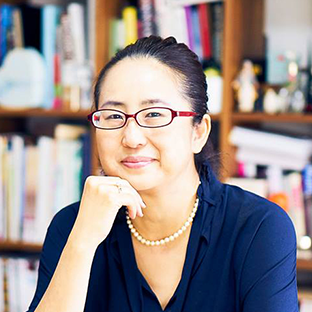

2024年12月11日（水）の「アバターアワード2024授賞式」の生放送はこちら

Nuibari
投稿者：メシエナンバー氏


審査員コメント キャットウォークに出てきた瞬間から「おや、違うぞ。なんだろこれ」というフックがあり、色のバランスやアバターに込めている思いなどがトータルで群を抜いていました。可愛いさの中に毒も含んでいる魅力的なアバターです。 配色のセンスが素敵。細かな衣装のこだわりと、デフォルメされた等身がとてもキュートです。モデルの出来が群を抜いてクオリティが高いなと思いました。（LAM氏）

Nuibari
投稿者：メシエナンバー氏
審査員コメント キャットウォークに出てきた瞬間から「おや、違うぞ。なんだろこれ」というフックがあり、色のバランスやアバターに込めている思いなどがトータルで群を抜いていました。可愛いさの中に毒も含んでいる魅力的なアバターです。 配色のセンスが素敵。細かな衣装のこだわりと、デフォルメされた等身がとてもキュートです。モデルの出来が群を抜いてクオリティが高いなと思いました。（LAM氏）
Nuibari
投稿者：メシエナンバー氏
審査員コメント キャットウォークに出てきた瞬間から「おや、違うぞ。なんだろこれ」というフックがあり、色のバランスやアバターに込めている思いなどがトータルで群を抜いていました。可愛いさの中に毒も含んでいる魅力的なアバターです。 配色のセンスが素敵。細かな衣装のこだわりと、デフォルメされた等身がとてもキュートです。モデルの出来が群を抜いてクオリティが高いなと思いました。（LAM氏）

・「春野まじこ」（投稿者：渡辺秋穂氏）
一次審査通過者一覧
・「名前」

「アバターアワード」は3Dアバター向けファイルフォーマット「VRM」の策定・普及を目的とした一般社団法人VRMコンソーシアムが主催の、独創的な進化を続けるアバター文化の振興とクリエイターの社会的認知度向上を目的に、一般より広く3Dアバター作品を募集し、キャラクター性・ファッション性・先進性を基準に優れた作品を顕彰するアワードです。
また、2023年度からはアバター同士ならではの交流をテーマとする写真を選出するアバターライフ部門、アバター文化の一般への認知度向上や文化推進に 最も貢献した人に贈られる「アバターアワード特別功労賞」を設けています。幅広いアバターを通じた活動を、今回はXR／メタバースがテーマの国内最大級カンファレンス「XR kaigi 2024」を舞台に表彰します。
審査員は、パリ・コレクションで注目を集めた世界的ブランド「KEITA MARUYAMA」を手掛けるファッションデザイナーの丸山敬太氏や人気ファッション誌の『ViVi』など数々の雑誌を手がけてきたファッション・クリエイティブ・ディレクターの軍地彩弓氏、電撃文庫『ソードアート・オンライン（SAO）』などのミリオンセラーを生み出した編集者として知られる三木一馬氏、アニメも大人気！漫画『ダンジョン飯』の作者の九井諒子氏など、多様な分野の第一線で活躍するクリエイターが参画します。審査においては、アバター作品のキャラクター性・ファッション性・先進性を評価し、選考を行いました。また、表彰式ではニッポン放送のアナウンサー・吉田尚記氏がMCを務めます。
エントリー期間中（2024年9月24日～10月25日）に投稿された作品のうち最終ノミネートとして選出された12作品が、2024年12月13日（金）の「アバターアワード2024授賞式」で最優秀賞が決定・表彰されます。


三木一馬
ライトノベル編集者。元・電撃文庫編集長。 現在は株式会社ストレートエッジ代表取締役。 主な担当作品に『ソードアート・オンライン』、『魔法科高校の劣等生』、 『とある魔術の禁書目録』など。 自らの著書に『面白ければなんでもあり 発行累計6000万部――とある編集の 仕事目録』がある。近著では自らラノベ『チートの王』を執筆、ウェブで公開している。 https://ncode.syosetu.com/n3229ga/

軍地彩弓
編集者/ファッション・クリエイティブ・ディレクター。 講談社『ViVi』編集部でフリーライターとして活動。 その後、『GLAMOROUS』の立ち上げに尽力する。2008年に現コンデナスト・ジャパンに入社。 クリエイティブ・ディレクターとして、『VOGUE GIRL』の創刊と運営に携わる。 2014年に株式会社gumi-gumiを設立。 『Numero TOKYO』のエディトリアルアドバイザー、ドラマ『ファーストクラス』（フジテレビ系） や映画のファッション監修、Netflixドラマ『Followers』のファッションスーパーバイザー、 企業のコンサルティングなど幅広く活動。

司会者の名前
司会者の概要

特別ゲストさん
スペシャルな方をお招きしました。

①アバター部門：X（旧Twitter）でVRMコンソーシアム事務局をフォローし、自身のアバターのベストショット、全身がわかる画像を添付して、ハッシュタグ「#AvatarAward2024」を付けて投稿。
②アバターライフ部門：TwitterでVRMコンソーシアム事務局をフォローし、アバターの集合写真などアバター同士の交流が伝わる写真を添付して、ハッシュタグ「#AvatarAward2024」に加えて「#AvatarLife2024」を付けて投稿。タイトルがあれば投稿にご記載ください。
その他以下の条件をお読みいただいた上、ご応募ください。
応募X（旧Twitter）アカウントにてDMが「すべてのアカウントからのメッセージリクエストを許可する」に設定されており、VRMコンソーシアム公式アカウント @vrm_pr とダイレクトメッセージが送受信できるようになっている。もしくはメールアドレスをプロフィールなどに明記し、事務局から連絡が取れるようになっている。 投稿に使用するアバター・画像の権利を保有している、もしくはそれに準ずる状態である。他者の著作物を含む場合、自己の責任の下で権利者への確認・クレジットでの明確化を行うものとし、事務局ならびに一般社団法人VRMコンソーシアムは一切責任を負わないものとします。アバターメイキングツールに関しては何をご使用いただいてもかまいません。
応募締め切り：2024年10月25日 23:59

11月上旬までに一次審査通過のご連絡をいたします。その時点でアバターデータ・ランウェイに関する指示・サムネイル画像の提出をgoogle formでご依頼いたします。
その後、アバターデータでの最終選考選考となり、受賞者の発表はXR kaigi 2024でのアバターアワード授賞式を以てご報告とさせていただきます。
・受賞で獲得された権利は、他の人に譲渡することはできません。
・受賞者にのみ提供される情報を他者に共有した場合、当選が無効となります。
・受賞者と長らく連絡が取れない場合には、受賞を無効とさせていただく場合もございます。
あらかじめご了承ください。

一次選考を通過したアバター作品は、最終選考に向けたランウェイによるウォーキング動画の収録、およびVR会場によるアバターモデルの展示を予定しております。
その際、以下の条件を満たす必要がございますので、ご対応が難しい場合、応募写真のみでのご紹介とさせていただきますのであらかじめご了承ください。
・VRM形式でファイル提出が可能である事
・FBX形式でファイル提出が可能である事
・日本語での意思疎通が可能である方
・18歳未満の場合、保護者の同意を頂ける方
応募規約
受賞者には生放送で放映するために必要なデータ、情報をご提供いただきます。あらかじめご了承ください。
コメントと投稿写真、画像は、アバターアワード2024公式webサイト・X（旧Twitter）含む各種SNS、VRMコンソーシアム発行物等でご紹介させて頂く場合がございます。 当イベントの運営一切は事務局が行います。事務局は、必要と判断した場合には、本応募要項を変更できるほか、当イベントの適正な運用を確保する為に必要なあらゆる対応ができるものとします。
応募者は当イベントへの応募にあたり、本応募要項および事務局の運営方法に従うものとし、その運営方法について一切異議を申し立てないものとします。ご提供いただいたデータや情報の当選者の都合による変更、取り下げは受け付けません。
次の場合はいずれのご応募も無効となります。ご注意ください。
応募内容に公序良俗に反する内容を含む場合。
受賞連絡後、ダイレクトメッセージやメールに記載の期限内に返信がない場合。
ご提供データ群や情報、内容に不備がある場合。
その他、応募に際し、不正な行為があった場合。
投稿写真について
写真、画像、動画の投稿は、自己の責任の下で行うものとし、事務局ならびに一般社団法人VRMコンソーシアムは一切責任を負わないものとします。
また、投稿物が以下のいずれかにあたる場合には、選考の対象外とさせていただきます。理由等に関するお問い合わせにも応じかねますことをご理解ください。
著作権等第三者の権利を侵害するもの、名誉・信用を毀損するもの、迷惑行為となるもの、その他法令違反となるもの、及びそのおそれがあると事務局が判断したもの。
広告・宣伝・営業活動・特定の思想・宗教への勧誘、又はそれらに類する内容を含むもの。
住所等個人情報が含まれるもの。
上記の他、当イベントの趣旨にそぐわない等の理由で事務局が対象外と判断したもの。
※投稿写真については、著作権などの権利のすべてが応募者に帰属するもの、 および被写体の肖像権など、他者の諸権利を含む作品のうち、権利者の承認を得たものに限らせていただきます。
※万一、投稿写真について、第三者と紛争等が生じた場合は、応募者ご自身の責任と費用負担によって解決するものとし、事務局および他の応募者に対し一切の迷惑をかけないものとします。
個人情報の利用目的
応募者にご送付いただいた個人情報は、次の利用目的の範囲内で利用いたします。
受賞者への連絡のための利用
サービス向上の目的で、個人を特定しない統計的情報としての利用。個人情報を応募者のご同意なく上記の利用目的以外で使用する事や、第三者へ提供することはございません。（※法令などにより開示を求められた場合を除く）
受賞者への連絡のための利用
当サイトの利用に関連して発生した利用者または第三者の損害について、事務局ならびに当法人は一切の責任を負わないものとします。また、利用者が当イベント規約に違反していると事務局が判断した場合、アカウントのブロック等、事務局が必要と判断する措置を取ることができるものとし、これにより利用者が被った損害について、事務局は一切の責任を負わないものとします。
準拠法および裁判管轄
当イベント規約に関しては、日本法を準拠法とし、当イベント規約に関する紛争については、東京地方裁判所を専属的合意管轄とします。
以上


2020

2021

2022

2023
Copyright © 一般社団法人VRMコンソーシアム All Right Reserved.